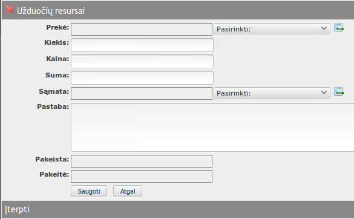
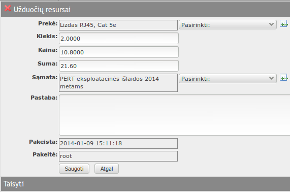
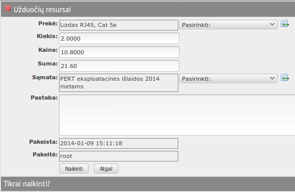

į pradžią Turinys
Užduočių resursai
Užduočių resursuose fiksuojami resursai, sunaudoti užduoties vykdymui. Pagal įvestus užduoties vykdymui sunaudotus resursus gali būti suformuojamas resursų nurašymo dokumentas.
Registras atverčiamas iš užduoties redagavimo formos, pasirinkus skirtuką „Užduočių resursai“.

Lentelės rodinyje matyti:
- Prekė – resurso, snaudoto užduoties vykdymui, pavadinimas.
- Kiekis – resurso, snaudoto užduoties vykdymui, kiekis.
- Kaina – resurso, snaudoto užduoties vykdymui, kaina.
- Suma – resurso, snaudoto užduoties vykdymui, suma.
- Sąmata – kuriai sąmatai priskiriamos sąnaudos.
- Pakeista – įrašo pakeitimo data, laikas.
- Pakeitė – įrašą pakeitusio naudotojo vardas.
Galima atlikti šiuos veiksmus:
į pradžią TurinysĮterpti naują resursų, sunaudotų užduoties vykdymui įrašą
- Spausti
 lentelės antraštėje.
lentelės antraštėje. - Atsiverčia naujo įrašo įterpimo forma.
- 
- Formoje užpildomi laukeliai:
- Prekė – resurso pavadinimas. Pasirinkti iš sąrašo. Jeigu sąraše nėra, galima papildyti:
spausti sąrašo dešinėje, užpildyti formą.;
- Kiekis – resusrso, sunaudoto užduoties vykdymui kiekis;
- Kaina – resurso kaina. Užpildoma automatiškai, iš prekių sąrašo;
- Suma – resurso suma. Suskaičiuojama automatiškai;
- Sąmata – kuriai sąmatai priskiriamos sąnaudos. Pasirinkti iš sąrašo;
- Pastaba – bet koks tekstas. Gali likti tuščia;
- Pakeista – įrašo pakeitimo data, laikas. Užpildomas automatiškai;
- Pakeitė – įrašą pakeitusio naudotojo vardas. Užpildomas automatiškai;
- Prekė – resurso pavadinimas. Pasirinkti iš sąrašo. Jeigu sąraše nėra, galima papildyti:
spausti
- Paspaudus duomenys išsaugomi, forma užverčiama.
- Paspaudus duomenys neišsaugomi, forma užverčiama.
- Pažymėti norimą redaguoti įrašą.
- Spausti
 lentelės antraštėje.
lentelės antraštėje. - Atsiverčia įrašo redagavimo forma.
- 
- Forma užpildoma taip pat, kaip ir įterpiant įrašą.
- Paspaudus duomenys išsaugomi, forma užverčiama.
- Paspaudus duomenys neišsaugomi, forma užverčiama.
- Pažymėti norimą panaikinti įrašą.
- Spausti
 lentelės antraštėje.
lentelės antraštėje. - Atsiverčia įrašo naikinimo forma.
- 
- Paspaudus įrašas sunaikinamas, forma užverčiama.
- Paspaudus įrašas nesunaikinamas, forma užverčiama.
Redaguoti resurso, sunaudoto užduoties vykdymui įrašą
Naikinti užduoties įrašą